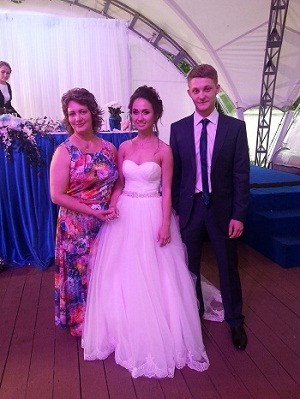
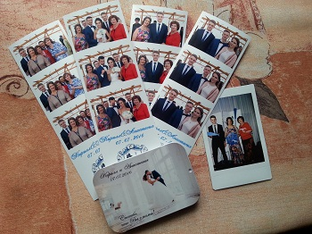
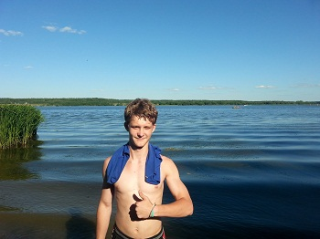
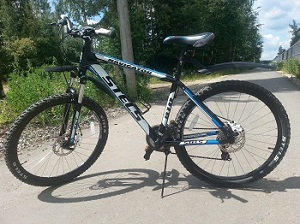

Мое лето началось с производственной практике. Которая как-то не особо задалась… Где-то через неделю нас с нее выгнали:-((((. Ну я решил не отчаиваться, так как лето, есть свободное время. Решил заняться учебой по программированию…но если честно сказать, то особо из этого ничего не вышло, так как появился вариант выйти на работу, а это значит начать копить на машину, на что я с радостью согласился. Так и прошел 1 месяц лета….

2 месяц начался с положительной ноты, я поехал на неделю в Питер, где моя двоюродная сестра выходила замуж. Правда с погодой немного не повезло, именно в день свадьбы, целый день шел дождь, но это не помешало нам хорошо погулять, все гости были очень довольны.
 Вернувшись обратно в Балашиху я решил опять подыскать работу на лето. И меня принял к себе на склад мой знакомый, где я и проработал до конца лета.
Но помимо работы я еще катался на велосипеде и купался в речке.
 
Под конец лета мне повезло и я наконец сдал на права!!!!!!
Теперь вот занимаюсь поиском машины….